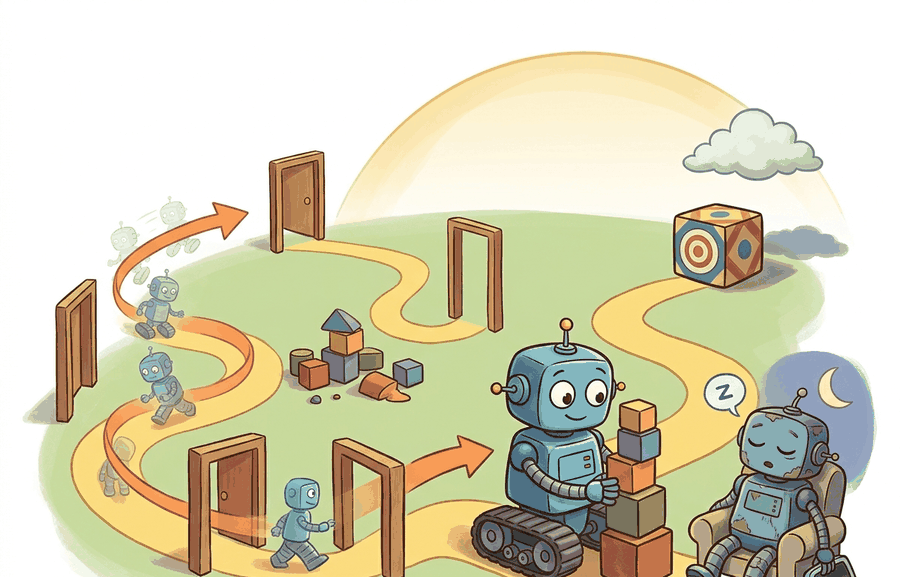

"The robot did the right thing eventually. The evaluator had already gone home."
A Time-Limited Agent

Episodes, horizons, trajectories, discounting make time explicit. An episode is one trial, a horizon is the time available, a trajectory is the sequence of transitions, and discounting describes how future outcomes are weighted.
This section develops the time vocabulary behind closed-loop evaluation. A robot policy is not only a mapping from observations to actions. It is behavior over time: starts, recoveries, repeated attempts, delayed rewards, timeouts, and failures that appear only after several transitions.
Time scale changes the problem. A short horizon favors quick local behavior. A long horizon exposes recovery, drift, and delayed harm. Discounting can prefer earlier success, but it should not erase future safety consequences.
A metric that ignores horizon, truncation, and trajectory structure is not measuring the same task the robot faces in deployment.
Theory
A trajectory can be written as $(o_0, a_0, r_1, o_1, a_1, r_2, ...)$ with status fields that mark termination or truncation. For a finite episode of length $T$, the discounted return from time $t$ is $$G_t = \sum_{k=0}^{T-t-1}\gamma^k r_{t+k+1}.$$ Here $r_{t+k+1}$ is the reward received $k$ steps into the future, and $\gamma \in [0,1]$ controls how fast those future rewards shrink.
The formula is a weighting rule, not a moral statement about the task. With rewards $[-0.1, -0.1, 1.0]$ and $\gamma=0.95$, the return is $-0.1 + 0.95(-0.1) + 0.95^2(1.0) = 0.708$. With $\gamma=0.5$, the same delayed success is worth only $0.100$. In embodied systems, that difference can decide whether the policy learns patient recovery or prefers a risky shortcut.
The mechanism is trajectory accounting. Each step should preserve observation, action, reward, costs, status flags, timing, and diagnostic info. Aggregate metrics should be computed from these records, not from disconnected summaries.
Worked Example
Code Fragment 2.5.1 computes return from a trajectory while keeping the episode ending visible.
# Section 2.5: runnable checkpoint for episodes, horizons, trajectories, and discounting.
# Keep the output small so the evidence record can be inspected directly.
trajectory = [
{"reward": -0.1, "terminated": False, "truncated": False},
{"reward": -0.1, "terminated": False, "truncated": False},
{"reward": 1.0, "terminated": True, "truncated": False},
]
gamma = 0.95
discounted_return = sum((gamma ** t) * step["reward"] for t, step in enumerate(trajectory))
ending = trajectory[-1]
print({
"return": round(discounted_return, 3),
"terminated": ending["terminated"],
"truncated": ending["truncated"],
})Expected output: the trace should show both the discounted return and the episode status. A high return with truncated=True would mean something different from a natural task completion, so both fields belong in the same artifact.
The 9-line return calculation becomes built-in rollout accounting in Gymnasium wrappers, Stable-Baselines-style trainers, CleanRL scripts, or Isaac Lab runners. These tools handle vectorized episodes and logging. The hand calculation remains useful because it shows exactly how returns and ending flags should be interpreted.
Practical Recipe
- Define episode start and end conditions before training.
- Separate natural termination from time-limit truncation.
- Log the full trajectory, not only final score.
- Choose a horizon that matches the real deployment task.
- Compare policies on the same episode panel, seed set, and simulator configuration.
Mixing truncated time-limit episodes with true task failures corrupts evaluation. A robot that runs out of time is different from a robot that collides, and the logs should preserve that difference.
A navigation benchmark initially ranked a cautious policy below a fast policy because all unfinished episodes were treated as equal failures. After logging path progress, collision-free time, and truncation reason, the team saw that the cautious policy was safer and needed a longer horizon for the intended task.
An episode without a horizon is like a meeting without an end time: eventually something happens, but nobody agrees whether it was success.
Long-horizon robot learning now combines action chunking, memory, subgoals, and world models. Evaluation must use the same horizon as the claim, especially when systems recover from early mistakes or accumulate hidden risk over time.
Change the final step in Code Fragment 2.5.1 from terminated to truncated. Then compute separate summary fields for success rate, truncation rate, and average return.
Can you explain whether your task ends because the goal is reached, because the robot failed, because time expired, or because an external monitor stopped it?
Episodes, horizons, trajectories, and discounting become useful when they are tied to a closed-loop contract between policy, world, evaluator, and safety constraints. The contract names the start condition, end condition, time budget, trajectory fields, discount convention, and result artifact. That is the bridge between a readable concept and a system a skeptical builder can test.
For Episodes, horizons, trajectories, discounting, separate the conceptual claim, the systems claim, and the evidence claim. A good explanation, a clean API, and one successful rollout are different kinds of evidence, and the section should keep them distinct.
| Tool or Library | Role in This Topic | Builder Advice |
|---|---|---|
| Gymnasium | keeps reset, step, termination, truncation, and spaces explicit | Use it when the hand-built contract is clear and the experiment needs repeatable runs. |
| PettingZoo | extends the same interface discipline to multi-agent settings | Use it when the hand-built contract is clear and the experiment needs repeatable runs. |
| ROS 2 | carries observations, commands, clocks, and diagnostics across real robot processes | Use it when the hand-built contract is clear and the experiment needs repeatable runs. |
For Episodes, horizons, trajectories, discounting, a robust implementation starts with one inspectable baseline whose artifact records observations, actions, units, timestamps, seeds, termination reasons, and the perturbation applied. The maintained-tool version is useful only if it preserves that schema and lets the comparison remain construct-matched.
- Write a one-paragraph task contract with observation, action, success, failure, and safety fields.
- Start with the smallest simulator, dataset, or wrapper that exposes the task contract faithfully.
- Run one deterministic smoke test and one perturbation test before scaling.
- Save one artifact containing configuration, seed, metrics, traces, and failure labels.
- Compare methods only when the same script evaluates the same panel, split, seed set, and metric.
When episode evaluation fails, avoid labeling the whole method as weak. First assign the failure to start-state sampling, horizon choice, termination logic, truncation handling, reward timing, or evaluation aggregation. Then rerun one controlled perturbation that isolates the suspected cause. This pattern turns a disappointing rollout into a reusable diagnostic asset.
Closed-loop evidence is temporal evidence. Report trajectories, horizons, discounting, termination, and truncation clearly or the result will be easy to misread.
Take a five-step trajectory and compute undiscounted return and discounted return with gamma equal to 0.9. Explain how the ranking changes if success is delayed.
What's Next?
Section 2.6 uses this temporal structure to formalize MDPs and Bellman backups.
Bibliography & Further Reading
Foundational References For This Section
Bellman, R.. "A Markovian Decision Process." (1957). https://doi.org/10.1515/9781400835386-007
The mathematical origin of the state, action, transition, and reward framing.
Kaelbling, L. P., Littman, M. L., and Cassandra, A. R.. "Planning and acting in partially observable stochastic domains." (1998). https://www.sciencedirect.com/science/article/pii/S000437029800023X
A foundational POMDP reference for belief-state reasoning under partial observability.
Farama Foundation. "Gymnasium Documentation." (2024). https://gymnasium.farama.org/
The maintained reference for reset, step, spaces, termination, truncation, wrappers, and reproducible environments.